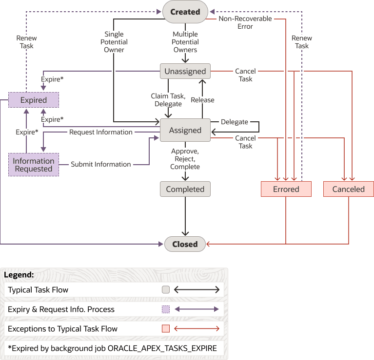

20.14.1 About Task States and Transitions
Learn about the task lifecycle in the Oracle APEX approval component.
The task lifecycle is the path a task takes from the time the task is created to the time that the task is complete. There are three lifecycle stages: Initial, when a task is created, Intermediate, as the task moves through various states, and Final, when a task is complete.
A state is the current location of the task in the task lifecycle. A transition refers to the movement of a task between states. Transitions can occur as part of the normal task lifecycle, or they can occur due to an exception or a user interruption.
- an underlying database error
- a code bug
- an invalid Task Definition
- an error during execution of the action specified for the Task Definition
A canceled state occurs when the initiator or the business administrator of the task explicitly cancels the task.
An expired state occurs when the due date arrives, the task is not complete, and either the task does not have a renewal policy or the maximum number of renewals has already been reached.
Task states and possible transitions are available in the following diagram, or in the Table 20-1 table. 
Description of the illustration approvals_state_diagram.png
Table 20-1 Task States and Transitions
| Task State | Lifecycle Stage | Category | Possible Transitions |
|---|---|---|---|
| Created | Initial | Normal |
|
| Unassigned | Intermediate | Normal |
|
| Assigned | Intermediate | Normal |
|
| Info Requested | Intermediate | Normal |
|
| Completed | Final | Normal | None |
| Errored | Final | Exception |
|
| Canceled | Final | User Interrupted | None |
| Expired | Final | Normal | None
|
Parent topic: About Tasks